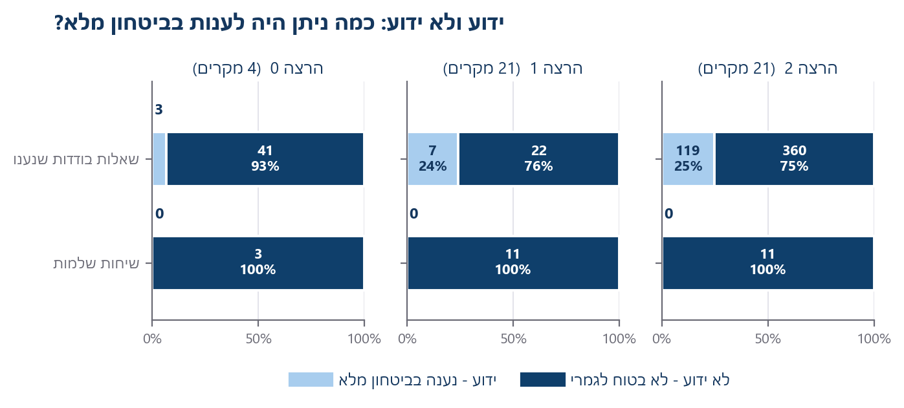
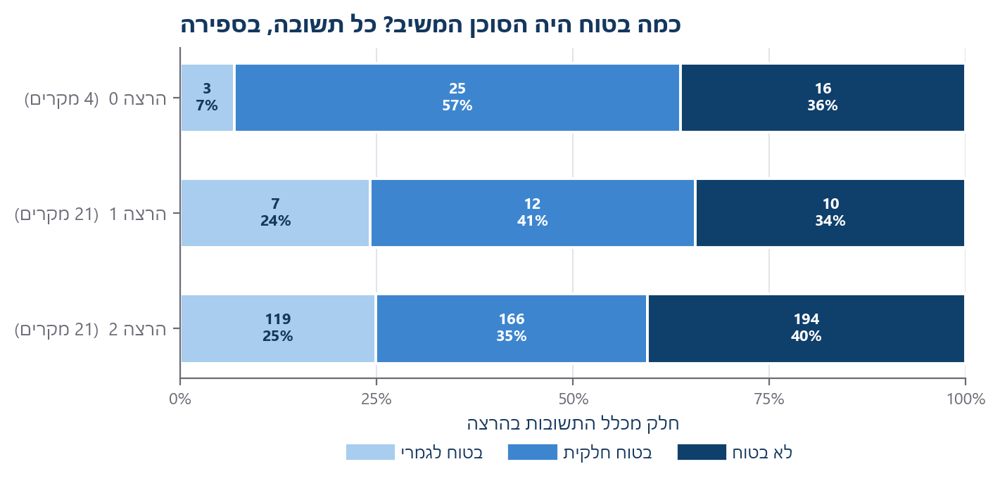
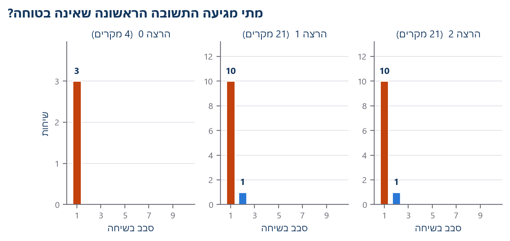
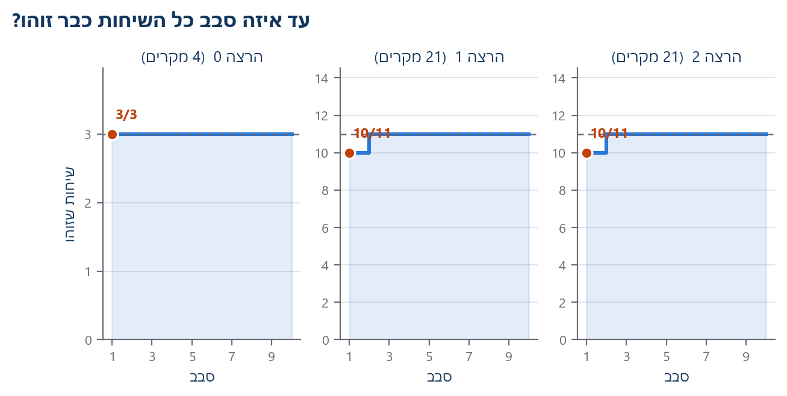
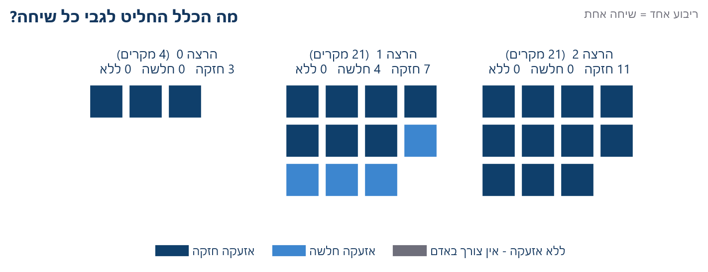
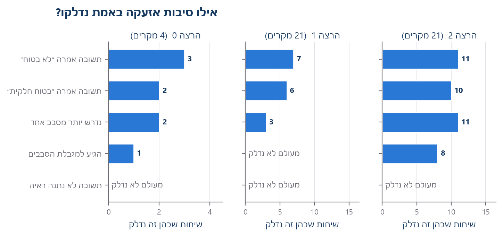
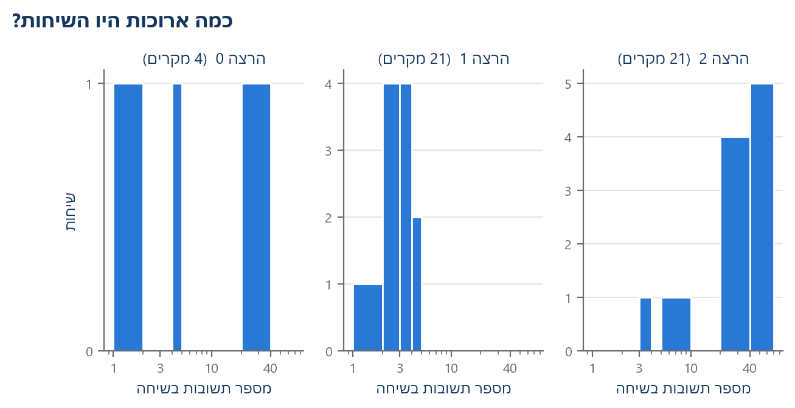
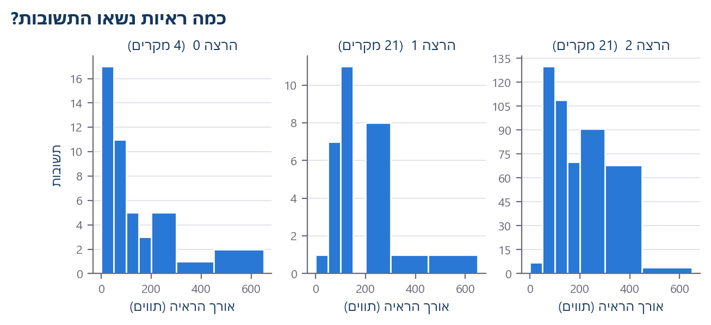
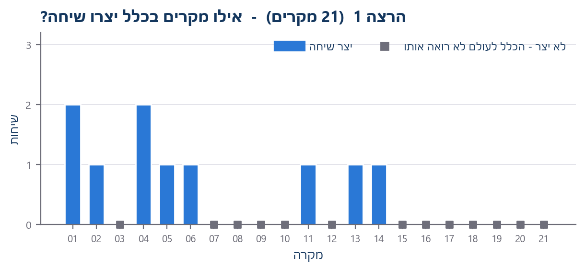

מתי המערכת מזהה שהיא צריכה אדם?
VEGO-AI · מחקר 1 · בסיס הזיהוי, בשפה פשוטה
75%+
תשובות שאינן בטוחות לגמרי
ארבע מילים, לפני התרשימים
שיחהסוכן אחד שואל, אחר עונה, עד שמפסיקים.
סבבהלוך ושוב אחד. שיחה יכולה להימשך עד 10 סבבים.
לא בטוחמילותיו של הסוכן המשיב על תשובתו. זה אינו אומר שהתשובה שגויה.
זיהויהרגע הראשון שבו לכלל יש על מה להידלק. זה אינו אומר שקרתה בעיה.
שאלה 1 · שאלות ידועות ולא ידועות

השורה העליונה: תשובות בודדות. השורה התחתונה: שיחות שלמות. כרבע מהתשובות חזרו בביטחון מלא — אך אף שיחה לא הייתה בטוחה מתחילתה ועד סופה.
0 שיחות אף שיחה מוקלטת לא נענתה בביטחון מלא לאורך כל הדרך. זו הסיבה שכל שיחה מגיעה בסוף לאדם, וזו הסיבה ששום דבר כאן אינו חיסכון בזמן אדם.
מה התרשימים מראים
- רוב התשובות לא היו בטוחות לגמרי — בין 75% ל-93% בכל הרצה.
- הזיהוי קורה בסבב 1 ב-9 עד 10 מכל 10 שיחות.
- רק שתיים מחמש סיבות האזעקה עושות את רוב העבודה.
- ״אין ראיה״ מעולם לא נדלק — כל תשובה נשאה ראיה.
- כל שיחה סומנה. אף אחת לא נוקתה.
מה הם אינם מראים
- לא אם תשובה כלשהי נכונה או שגויה. איש לא בדק.
- לא ששיחה שסומנה מכילה בעיה.
- לא שמקרה אפור הוא תקין.
- לא חיסכון כלשהו בזמן אדם — איש לא מדד אותו.
- כלל שמסמן הכול עדיין לא מיין דבר.
שאלה 2 · כמה בטוחות היו התשובות?

כל תשובה בכל הרצה, לפי כמה הסוכן המשיב אמר שהוא בטוח. רוב התשובות לא היו בטוחות לגמרי. ההרצות מוצגות בנפרד ולעולם אינן מחוברות.
שאלה 3 · נקודת הזיהוי

כל עמודה סופרת שיחות שבהן התשובה הראשונה שאינה בטוחה הגיעה באותו סבב. כתום הוא סבב 1.
שאלה 4 · כמה מהר הכול מזוהה?

אותו דבר, בהצטברות. הקו המקווקו הוא כלל השיחות באותה הרצה.
סבב 1 בכל הרצה, 9 או 10 מכל 10 שיחות כבר היו ניתנות לזיהוי בתשובה הראשונה ממש, וכולן עד סבב 2. סבבים 3 עד 10 עלו כסף ולא שינו אף סימון.
שאלה 5 · מה הכלל החליט לגבי כל שיחה

כל ריבוע הוא שיחה אמיתית אחת. המשבצת האפורה במקרא נשארה ריקה בכל הרצה: הכלל מעולם לא אמר אף פעם שאין צורך באדם.
שאלה 6 · סיבות האזעקה

לכלל יש חמש סיבות להידלק. אפור פירושו שלא נדלק כלל באותה הרצה. ״אין ראיה״ לא נדלק בשום מקום — כל תשובה נשאה ראיה כלשהי.
שאלה 7 · אורך השיחות

מספר התשובות בכל שיחה. הרצה 1 נשארה קצרה; הרצה 2 התארכה. דבר בהגדרות לא שונה ביניהן.
שאלה 8 · ראיות בתשובות

אורך הראיה שצורפה לכל תשובה, בתווים. אף תשובה לא חזרה ריקה, ולכן אזעקת ״אין ראיה״ מעולם לא נדלקה.
שאלה 9 · כיסוי, והשטח המת

ריבוע אפור על קו הבסיס מסמן מקרה שלא יצר שיחה כלל, ולכן הכלל מעולם לא ראה אותו. זהו שטח מת, לא אישור תקינות.
מעמד
תיאור התנהגות הכלל בלבד - לא בשל למסקנה מדעית
כל המספרים מחושבים מחדש מההקלטות השמורות. הכלל מעולם לא שונה. קיימת הרצת פיילוט רביעית שאי אפשר לאמת מהקבצים שפורסמו, ולכן היא אינה מופיעה באף תרשים כאן.